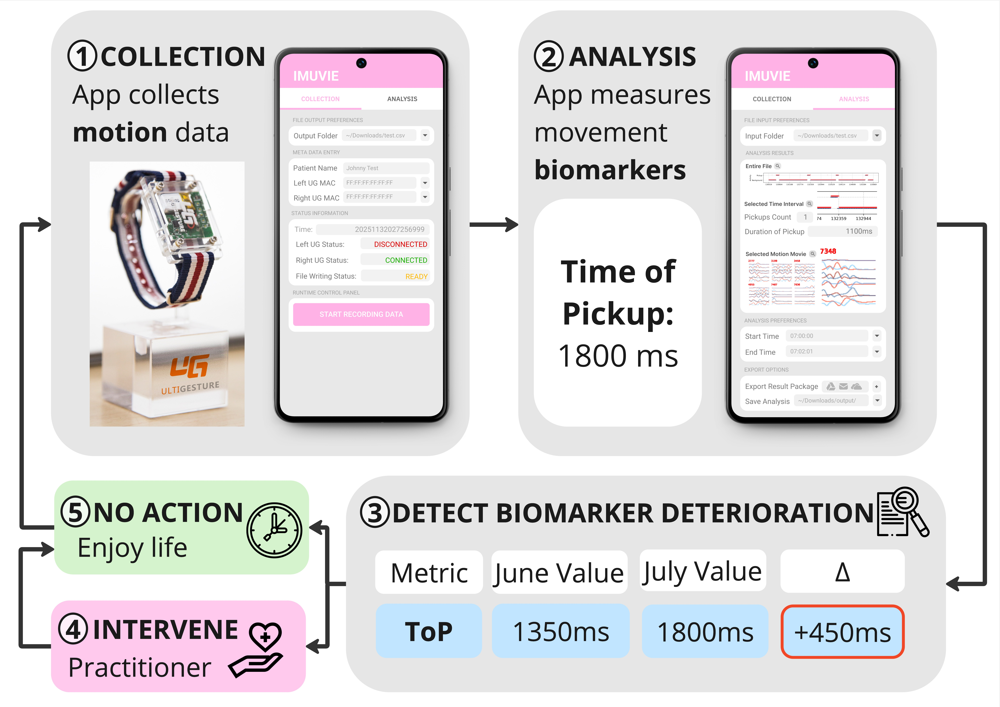
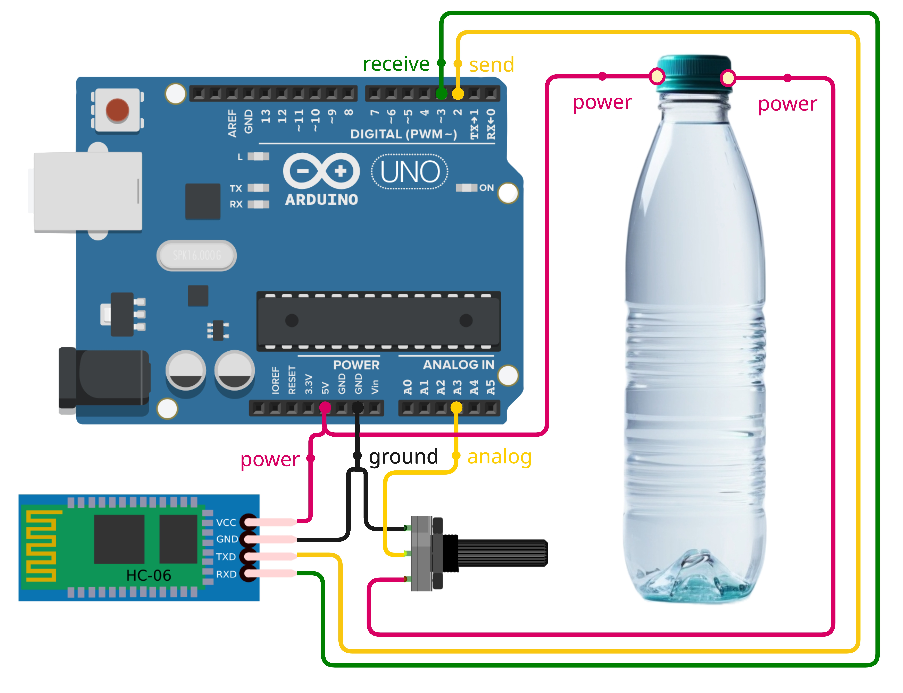

Hello! I'm Johnny
I'm a Computer Science Ph.D. at William & Mary. I successfully defended my dissertation in November 2025, after several years as a research assistant in the HealthComp lab, where I was advised by Dr. Gang Zhou.
I currently serve as a Delivery Operations Lead at Handshake AI, where I own the end-to-end delivery of human data pipelines — managing workforce operations, quality assurance, and throughput for the annotation and labeling work that trains AI systems, drawing on the same rigor from my Ph.D. research.
I design and deploy machine learning systems for real-world environments. I create intelligent, ubiquitous sensing and modeling pipelines that collect and interpret sensor data for health and wellness applications. My systems perform mobile decision-making to grade movement ability biomarkers, supporting healthy aging and clinical decision-making for conditions such as Parkinson's disease. I have also created a new mobile sensor that tracks electrolyte levels.
I'm translating this work into real-world impact through Motion Medix, a Virginia-based startup developing mobile sensing tools for health and aging.
📍 Williamsburg, Virginia
📧 jmclapham@wm.edu
📞 +1 (434) 218-9522
Movement Measurement
✅ Peer-Reviewed PublicationHealthy Aging Through Movement Insights
We develop wearable sensor technology that tracks movement patterns and analyzes key biomarkers. Our system helps older adults and individuals with movement-related conditions—like Parkinson’s disease—monitor changes in their mobility over time. By turning everyday movement into actionable data, we empower users and their care teams to make more informed decisions and improve treatment outcomes.
Learn more in our peer-reviewed publication. Read it here.

Electrolyte Measurement
✅ Peer-Reviewed PublicationElectrolyte Sensing, Anywhere
Our unobtrusive mobile sensor turns almost any container or surface into a real-time electrolyte tester. From smart water bottles and fruit probes to medicine flasks and hydration tanks, the system instantly measures electrolyte content and delivers clear, actionable data to everyday users—no lab or expertise required. By democratizing electrolyte analysis, we give athletes, patients, and wellness-minded consumers the insight they need to make informed decisions about hydration and nutrition.
Learn more in our peer-reviewed publication. Read it here.

Skills
I turn ideas into results.